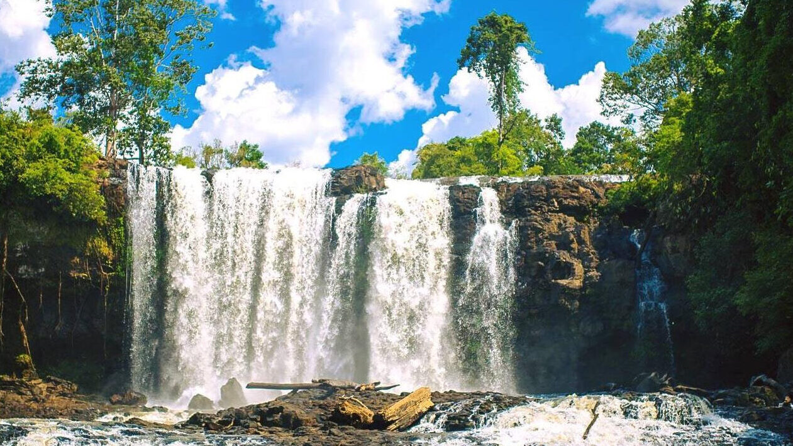

អ្នកទេសចរទាំងឡាយនៅពេលទៅដល់ខេត្តមណ្ឌលគីរីគឺរមែងមិនសូវជាចន្លោះនូវរមណីយដ្ឋានទឹកជ្រោះប៊ូស្រានោះឡើយ។រមណីយដ្ឋាននេះស្ថិតក្នុងស្រុកពេជ្រចិន្ដាចម្ងាយជាង៤០គីឡូម៉ែត្រពីស្រុកសែនមនោរម្យខេត្តសំបូរភ្នំមណ្ឌលគិរី។ទឹកកជ្រោះនេះចែកចេញជាបីដំណាក់៖
ដំណាក់ទី១:
ហូរធ្លាក់ក្នុងកំពស់៨ទៅ១២ម៉ែត្រដែលមានមុខកាត់ទទឹង១៥ម៉ែត្រនៅរដូវវស្សានិងកំពស់ពី១០ទៅ១៥ម៉ែត្រនៅរដូវប្រាំង។
ដំណាក់ទី២:
ហូរធ្លាក់ពីកំពស់១៥ទៅ២០ម៉ែត្រនិងមុខកាត់ទទឹង២០ម៉ែត្រនៅរដូវវស្សានិងកំពស់ពី១៥ទៅ៥ម៉ែត្រដែលមានមុខកាត់១៥ម៉ែត្រនៅរដូវប្រាំង។ទឹកធ្លាក់ទី២នេះមានចំងាយ៥៥ម៉ែត្រពីទឹកធ្លាក់ទី៥។
ដំណាក់ទី៣:
ហូរធ្លាក់ដោយល្បឿនលឿនខ្លាំងជាងល្បាក់ទី២។ល្បាក់នេះយើងមិនអាចទៅដល់បានទេពីព្រោះជាតំបន់ព្រៃក្រាស់ខ្វះមធ្យោបាយធ្វើដំណើរនិងតំបន់គ្រោះថ្នាក់នៃពពួកសត្វព្រៃ។